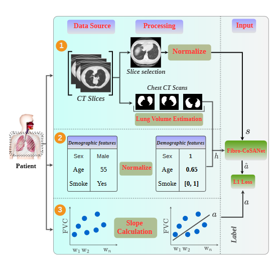

Fibro-CoSANet: Pulmonary Fibrosis Prognosis Prediction using a Convolutional Self Attention Network
Research Questions: Given the lung CT scans, demographics, and FVC of a patient at the current time, can we predict the prognosis of Idiopathic pulmonary fibrosis (IPF) in the future? Can we formulate an intuitive metric for the prognosis that the multi-modal model will predict instead of noisy time-series modeling?